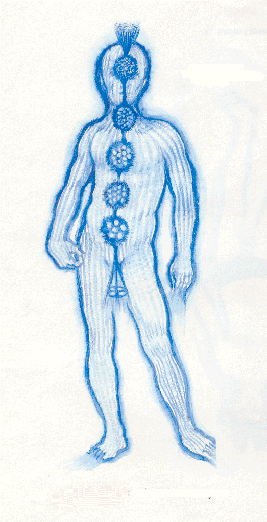
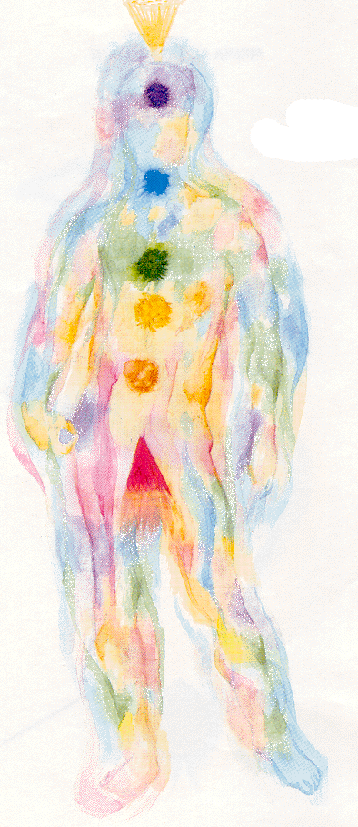
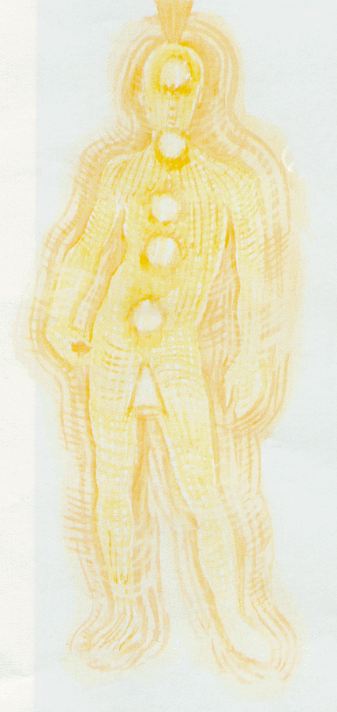
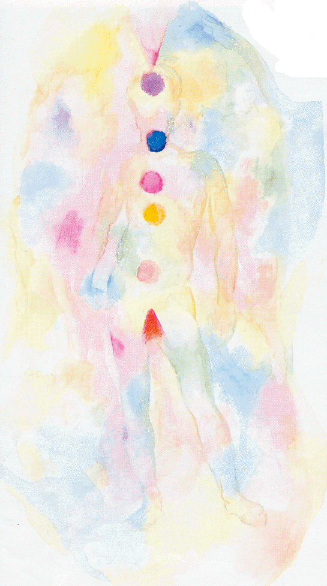
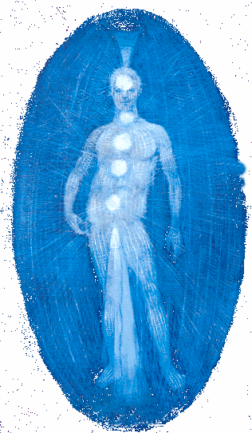
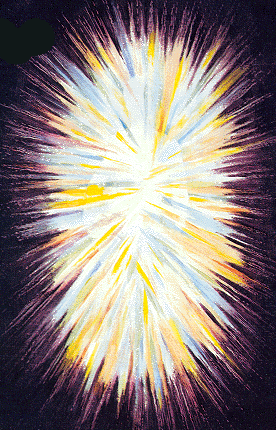
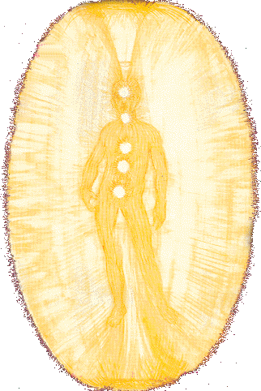
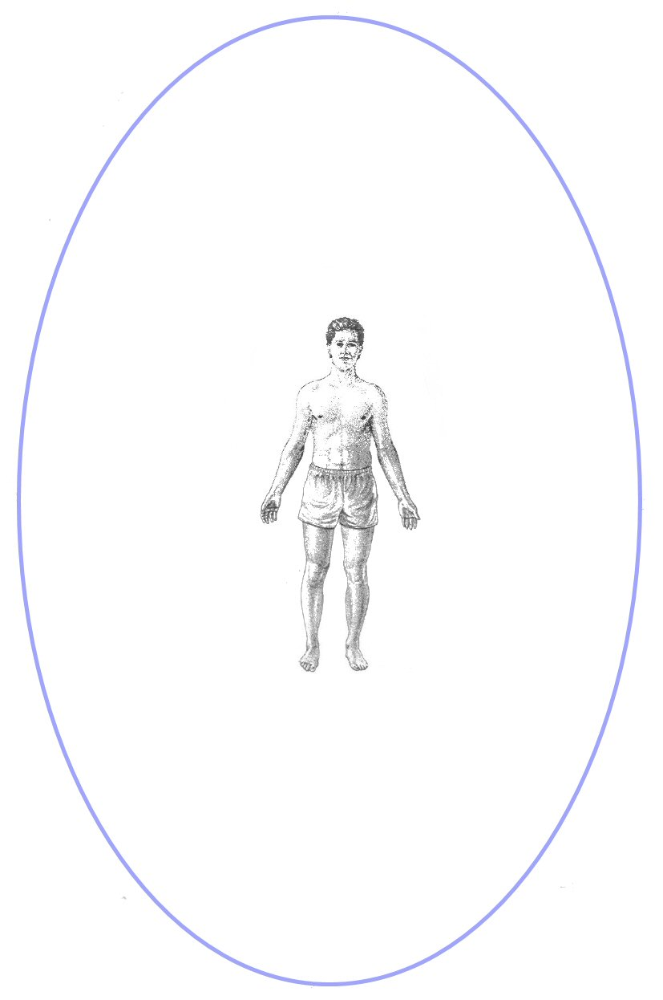

The AuraThe Aura is an energy field that surrounds all living things, comprised of magnetic energy this field is unique to each individual. Humans are complex and dynamic, constantly changing beings and as such the auric field of each person is also unique and changing. When we perceive an event through our senses this information is given meaning in our brain. This electrochemical process has an effect on the body, the brain sends electrical and chemical information through our body constantly regulating everything from how we feel emotionally, to how we feel physically. The path of flow for information in our body is the spine. As information comes from the brain and travels down the spine a direction of current flow is established, at a right angle to this flow of magnetic energy is your personal field or Aura. The Aura contains much information about us, this info can give us clues as to what has happened in the past, what sort of energies we are letting ourselves be open to in the future. Also past physical ailments or the beginning of new ones. Depending on the number of colors, the position of these colors, the shade of any particular color and many other factors such as the overall shape of your Aura, size, and how quickly your auric colors change gives us a wealth of information concerning your past, and your future possibilities. |
What Does An Aura Look Like ?
Imagine a space filled with light. Energy flows and swirls through it in bright colors. this life energy moves around you as you sit directly in the center. This place is your Aura, your own personal universe. It constantly moves and changes as you move and change.
Some people see as many as nine layers, most seven layers. It can extend as little as a few centimeters to many feet away from the body. The size of your Aura is unique to you.
Auras are flexible - they are changing all the time in size, colors and patterns. If you are someone that is very out going and likes to be noticed, your aura would be bigger then someone that is timid and likes to blend in with the crowd, not really drawing attention to themselves. This person would tend to have a smaller aura for they draw it in closer to their body.
With each breath your Aura is in movement. The colors are changing and moving all the time. We do hold prominate colors, some refer to this as "signature colors." When I first started to see Aura's I would see a solid color, this color gave me a clarity on that individuals personality.
The color we radiate is affected by our physical surroundings as well as by the people we come in contact with and the energy fields they radiate.
What Do The Colors Mean ?
The color chart listed below is the copyright of Mark Smith's book, Auras - See Them in Only 60 Seconds! If you are interested in learning more about colors of your aura and how they relate to the organs of your body, the chakras, and personality traits,
General Colors
Purple - Spiritual attainment, divine connection, mystical understanding, cosmic consciousness.
Indigo - Inspired thought or deep wisdom. Can show spirituality and devotional nature. Artistic and harmonious with nature. Self-mastery.
Blue - Strong mental powers, intelligence, logical thinking. Clear blue shows intuitive capabilities; "out of the blue." Dark shades show over analytic, suspicious nature or visionary mentality.
Green - Balance, harmony, healing, the calming force. Clear green shows adaptability, versatility. Dark shades are deceitful, jealous; "green with envy."
Yellow - Love and kindness, compassion, optimism; "breath of life." Dark, lifeless yellow shows suspicion, covetousness.
Orange - Energy and health, physical vitality, dynamic force. Pride can result from an excess of orange in the aura. Dark or cloudy orange shows low intellect.
Red - Physical life, vitality, ambition, sexual power. Dark or cloudy red shows violent or passionate tendencies; "red with rage."
Other Colors
Scarlet - Lust, lower passions, materialism.
Rose Pink - Selfless love, gentleness, modesty.
Brown - Avarice, selfishness.
Gold - Higher self, good qualities, harmony.
Silver - Versatility, High energy, constant change.
Gray - Depression, low energy, fear.
Black - Sinister, malice, evil intent.
Love Colors
What follows is love colors,
Red: Reds usually love sex. For them it's a hearty, wanton, playful, and joyful physical release. Reds don't necessarily need to be in love to enjoy sex, since sheer physical pleasure is the most important thing. They are passionate lovers and are not afraid to fully experience their sexuality and turn their fantasies into reality! Red signifies high energy, physical and emotional driver. If you want to have an exciting fling with a partner who takes control, choose red.
Orange: Orange needs space. If you're consumed in your career or need a lot of time for yourself, choose a partner with a lot of orange in his or her aura. An orange is fun when s/he is around, loves adventurous, high-energy sex like a red, but an orange will not be too demanding. People with orange auras are usually extremely creative, independent, often athletic, and frequently need to take off on some high adventure or jump full-bore into a creative project to test their limits. An orange might ask you to go sky diving or bungee jumping.
Yellow: Yellows love to sit around and discuss, theorize and analyze. You'll often find them hanging out in bohemian cafes, huddled around steaming espressos - enthusiastically debating how to solve the worlds problems. To them, life is one great mental riddle that can be solved in a logical and systematic manner. Innately curious, a yellow is always asking questions. Like Star Trek's Mr. Spock, a yellow's approach to life is primarily mental and cerebral. A yellow would probably rather discuss your political views on a first date than ravish your body. If you are turned on by intelligence, quick wit, and an optimistic attitude about life, go with Mr. or Ms. Yellow.
Green: Greens come from the heart, and their generosity and compassion know no limits. They are often innately caring and want to heal the world. Greens can be doctors, nurses, teachers, therapists, and social workers. They want to serve and make the world a better place to live in. Greens make tender, loyal, caring lovers, as much concerned with your pleasures as with theirs. They also tend to love children and animals, enjoy domesticity and family life. Greens can also be ambitious - striving to reach the top of their field. Not only kind, this person is often financially well off.
Blue: Blues are sensitive. They have a great depth of feeling and crave intimacy and meaningful communication. They are often thoughtful and introspective. Blues are not usually materialistic: a rich, spiritual, contemplative, and creative life is more important to them than monetary wealth. Above all, blues wish to be in loving, supportive relationships to which they can generously give and reveal themselves. With blues, love and sex go hand in hand. If you want to be with somebody who is true and emotionally there for you, choose a blue.
Purple: Expect the unexpected with a purple! These fascinating nonconformists live in the wonderful, wild worlds of their unlimited imaginations. Often purples would rather daydream and fantasize about sex rather than actually do it. Fantasy and role playing are not out of the question for a purple. Purples, who tend toward passivity, usually enjoy physical intimacy only after they feel safe and trust a caring partner. If you want to take the lead in a relationship and explore your fantasies, then purple may be for you.
Fuchsia Pink: This vibrant color sometimes appears in a particular part of the aura or may color the entire field. I don't define this color as a category, but rather as a sign which indicates the person is falling in love, or about to. Fuchsia pink also represents universal or unconditional love. Often, people who are very close and spend a lot of time together will "match energy" and their auras will look almost identical. Their energy fields vibrate to the same frequency, and are in balance. Partners in such relationship will feel very comfortable and in harmony with one another. The energy of love also vibrates at a very high frequency rate. When one is in love the aura expands and intensifies its color and brilliancy. Isn't it always easy to tell when someone is in love? Their whole being seems to sparkle and shine, and they look more alive. You're actually noticing and responding to their extra vibration.
How To See The Aura
Soft or low light is the best condition in which to first see the aura. It also helps to be relaxed, so bed is the best place to try this next experiment.
1. Turn off the lights. You don't want to work in pitch-black conditions and in most cases the street lights filtering through the curtains will provide enough light. If not, leave the landing light on and close the bedroom door. The small amount of light seeping underneath the door frame should be enough to work with.
2. As you lie in bed, hold your hands straight out in front of you. Look gently at them, don't stare hard- you need to gaze rather than look. The aura rarely appears as a bright light, it is more like a gentle heat haze.
3. Try fixing your attention on your hands while focusing your eyes on the bedroom wall. The hands will appear out of focus but this will help you get the knack of the way to look.
4. Now very slowly bring the fingertips of each hand towards each other until they are very close but not touching. The aura will appear as fine lines of blue and red light between the finger tips. You can try the same again just using the index fingers of both hands.
5. As you draw the hands apart you will see the streams of energy connecting each finger. Imagine the energy increasing and you will see the light glow brightly. Bringing the fingers tantalisingly close together in this way seems to increase the auric flow. It's just like when you bring two opposite poles of magnets together: you feel the attraction suddenly increase as the fields unite.
Human Energy System and Aura
Much has been written about the energy of living things but there is little scientific evidence. The energy field surrounding living things is difficult or impossible to measure using current scientific techniques. However, science and spirituality are on a convergent course. Eventually, we will have instruments that can reflect an individual's state of balance.
When we turn the corner from science, we must consider the universal characteristics of energy. Quantum physics states that energy and matter are interchangeable. In a similar fashion, each human is composed the divine energy of the Soul in the form of body, thought, and spirit. Energy does not emanate or reflect from a person; the energy is the person, the core.
This understanding is fundamental to maintaining your energy field and body in harmony. Since the body is a manifestation of human energy, dis-harmony in the energy field will cause dis-ease in the body. If the human energy field is out of balance, the body will be out of balance.
The Soul - you as your essential nature plus experience
Soul is coherent, intentional system, fulfilling its nature. It is God individualized as you and carries your real ideals and commitments, and gives character to your conscience. This divine energy is formless, timeless, and eternal. Soul is the essence as a fulfilling holiness.
The Personality- composed of the high self, conscious self, and basic self
The High Self is a spiritual consciousness that is our higher nature as personality. From a practical standpoint, it can function as our guides, soul, and connection to God. It is the energy of life and form. It is creative and non-inflictive.
The High Self exists as a spiritual form in our personal consciousness, which is always in contact with spirit. When I use the word spirit, it is the Holy Spirit and refers to forces beyond our personal domain.
High Self is within our personal domain. Sometimes people use the term "higher power." That may refer to anything higher than the conscious awareness of self and may lump High Self/spirit/etc.
All into one thing, which for all practical purposes is fine. As a spiritual expression it follows the same procedures as any spiritual agent, in that it responds to requests. It guides us in our destiny. You might say it is an agent of our soul. It is not soul, but soul-like.
It works closely with the Conscious Self and Basic Self. As the guardian angel, it links us with our soul, the universe, and the High Self of others. Because the High Self exists in a spiritual dimension, it cannot violate anyone or anything. Even if the High Self has better wisdom, it will not supersede our conscious choice unless we ask it to.
The Conscious Self is our waking life and creates new awareness. It is creative and innocent until a choice is placed into action. Its function is to be the vanguard of new experience and here we make choices and gain skill. As we grow in awareness and spiritual illumination, we extend the Conscious Self and become increasingly able to live in the awareness of the High Self and be conscious of the dynamics of the Basic Self. It mediates all three selves.
The Basic Self is our survival instinct and provides energy according to how we structure our beliefs and make our choices. It is loyal though noncreative and contains our family patterns, social norms and mores, an archetypal pattern of our destiny, our inner child, the seat of body intelligence, and the will to survive. Its job is to maintain the status quo.
In other words, the Basic Self has assimilated the beliefs developed through our life span and believes we will die if we change them. The reality of the Basic Self is habit and its self-will fights changes in habit. It will, however, respond to our authority and yield to any transformation that facilitates the actualization of our destiny. Many people have more than one Basic Self - such as male-female, play-persistent, young-old - which gives different perspectives.
The Aura
Aura is a traditional term for the protective psychic and spiritual energy fields that surround and penetrate the physical body. Historically, artists depict halos around the heads of individuals to denote their spirituality. Biblically, writers refer to the raiment or countenance of light in an attempt to describe the field of spiritual energy around angels, men, and women.
It is from this invisible atmosphere that we receive our first impression of people. We use common-sense terms such as blue mood, red with anger, green with envy, full of energy, or radiant beauty. Such terms are similar to how individuals with spiritual sight describe the aura. From this intuitive nature, we form impressions and experience emotions and feelings regarding them and ourselves.
Quantum physics describes the universe as energy, with energy and matter interchangeable. Psychology, Eastern therapy, and complementary medicine have terms for life as energy. Yoga psychology views the aura as an energy field surrounding the body, interacting through spiritual and psychological levels via structures called chakras.
So we may conclude that the aura is an energy field that surrounds the physical body and is discernible to those of psychical sight. It encircles each of us as the sun's rays encircle the sun or the halo that surrounds the moon.
The appearance of the aura, whether attractive or repulsive, depends on one's physical health, mental attitudes, and spiritual development. The human aura is a dynamic matrix that includes the physical, emotional, and mental-spiritual aspects of self. The aura is the self as energy.
All the contributing factors in our daily life register in our aura as colors, lines, dots, emanations, and vibrations. Every one of us is different, and our hidden selves are expressed through the aura. Those individuals who live on a strictly physical, mental, and material level have an entirely different emanation than those individuals who are intellectual and spiritual.
The Aura and Noetic Field
To the ancient Greeks, the mind is a spiritual faculty. Nous is their term for the intentional, purposeful intelligence that controls and orders the world of matter. Nous emerges from the void as the wind of spirit or the first emanating spirit of creation.
Noetic derives from nous and is the structure of perception and understanding in our experience of that relationship or correlation between nous and form. The noetic field is an interacting psycho-spiritual energy that has an implicit intelligence and knows how to interrelate and synchronize with all elements within that coherent system.
We are a microcosmic noetic field, and the universe is a macrocosmic noetic field. The noetic field is a sustaining, nurturing, intelligent life field that is universally present. This field can be compared with grace, dharma, nirvana, and heaven. As noetic beings, we have the capacity to generate a noetic field and, by doing so, interface with the universal noetic field.
The psycho-spiritual structure that we call personality forms an energy field or noetic matrix around the physical body that can be discerned through extended awareness or specialized, electronic instruments. Ancients called this the human aura. The aura has a degree of materiality or substance (a body) that is localized around a person. It is held together in much the same way as the physical body, by the presence of self.
Auric Levels
It is generally believed that he human aura has seven major levels. The physical and etheric levels extend about six inches to a foot from the physical body. The imaginal and emotional auric levels extend about two feet from the body and incorporate the physical and etheric levels. The mental, archetypical, and spiritual auras extent approximately three feet from the body and incorporate the other levels.
The archetypal aura contains the map of our destiny. It is like a template, things you must do. In your growth you need to learn something. You are given as many experiences as you need to learn that. It can be one or a hundred, all the same to the template. It's like going home - you can go many ways and have many experiences, but you get home, and thus satisfy your template.

When reflected outside of us, we see the archetypes as the pantheon of gods. When internalized, these archetypes are the angels of destiny, the gods that dwell inside us. As life-long learning, our destiny is synonymous with our Soul's curriculum. We came into physical life with an internal, archetypical lesson plan. The archetypical level is in our subconscious.
The spiritual aura reflects our transcendent nature into our psychological, social, and physical realities. It reflects and responds to the balance and alignment of all levels. The balancing energy acts as wholeness and moves through the chakras and levels as a process of breathing. Each of the other levels provides a conduit for spiritual energy. As the aura becomes balanced, the spiritual level becomes more evident.
Through our mental aura and mentality, we construct our relationship to our destiny, karma, and inner life; reflects our beliefs, concepts, and attitudes. Though feelings and emotions are often keys to our beliefs, our mental activity decides what we will build as our internal structure, and how we project ourselves into life. We shape our reality with our minds. Our mind is the constructor, the builder. It reflects our associative ability through which we internalize and develop our integrative learning and personality. This level also dissociative and reflects the constraints that divide us from and within ourselves and from each other. Mental heath or mental illness is reflected in this level.
The emotional aura carries the artifacts of our feelings and emotional reactions and actions; registers our fulfillment and longs for peace; reflects our warmth, devotion, and what we care about. Emotions give rise to our beliefs and judgments and the impetus to pursue our vision. The emotional aura reflects an aspect of our dharma or causal body (the force that determines and sets causation into our lives).
It is balanced through powerful, universally oriented, non-manipulative, unconditional loving. It is the source of our drive for power and dominance, and powers our adversarial and competitive nature. The emotional aura is also the source of passion and the total embracing, loving heart that heals and forgives. It is our peacemaker.
The imaginal aura is the medium through which we create and transform our circumstances. This aura can be developed as a function of perception or inner-seeing and creativity. Intention, positive self-image, visual learning, visualization and healing, manifestation and success are generated and reflected in this level.
Used integratively, it is a power force for connecting, integrating, and aligning all levels. Used dissociatively, the imaginal level can be devastating. Delusions and obsessions are generated through and reflected in this auric level. It is affected by drugs that create forms in the aura that are disconnected from the authentic processes of creativity. Drugs disconnect you from the ability to complete, fulfill, or enhance the soul's purposes. They effectively help us avoid life and the challenges and rewards that our soul is destined to fulfill.
The etheric aura is a blueprint or archetype for the physical body. Meridians and chakras appear in this formation. The etheric body or double acts as a template for the physical body and appears as an energy matrix. It is described in chi-gung as meridians that transmit chi to the body. Balance and alignment of the aura affect the meridians and their functioning. The meridians interact with the organs and the chakras interact with the endocrine system and nerves.
The physical aura reflects physical trauma, cell memory, physical health, and somatogenic beliefs and emotions. It penetrates the physical and etheric bodies and reflects the state of the energy fields. In balance, it can accommodate enhanced forces deeper in the psyche.
Auric Layers & Location

Within this image you can see the energy points which define the egdes of the auric layers, which we detected and mapped with the aid of a pendulum and colour laid the crystals for each layer within the auric Field
| Auric Body | Distance |
| Etheric Body | Left & Right Sides: 0 to 1 inch Above & Below: 0 to 2 inches |
| Emotional Body | Left & Right Sides: 1 to 4 Inches Above & Below: 2 to 5 inches |
| Mental Body | Left & Right Sides: 4 to 9 Inches Above & Below: 5 to 8 inches |
| Astral Body | Left & Right Sides: 9 to 13 inches Above & Below: 8 to 12 inches |
| Etheric Template Body | Left & Right Sides: 13 to 15 inches Above & Below: 12 to 16 inches |
| Celestial Body | Left & Right Sides: 15 to 18 inches Above & Below: 16 to 21 inches |
| Ketheric Template Body | Left & Right Sides: 18 to 23 inches Above & Below: 21 to 26 inches |
| Memory Body | Left & Right Sides: 23 to 25 inches Above & Below: 26 to 29 inches |
| Soul Body | Left & Right Sides: 25 to 28 inches Above & Below: 29 to 34 inches |
| Integrative Body | Left & Right Sides: 28 to 31 inches Above & Below: 34 to 38 inches |
| Eternal Body | Left & Right Sides: 31 to 34 inches Above & Below: 38 to 42.5 inches |
| Universal Mind Body | Left & Right Sides: 34 to 36.5 inches Above & Below: 42.5 to 46 inches |
| Layer 13 | Left & Right Sides: 36.5 to 40 inches Above & Below: 46 to 48 inches |
| Layer 14 | Left & Right Sides: 40 to 42 inches Above & Below: 48 to 51 inches |
| Layer 15 | Left & Right Sides: 42 to 45 inches Above & Below: 51 to 57 inches |
| Layer 16 | Left & Right Sides: 45 to 49 inches Above & Below: 57 to 59 inches |
| Layer 17 | Left & Right Sides: 49 to 52 inches Above & Below: 59 to 60 inches |
| Layer 18 | Left & Right Sides: 52 to 55 inches Above & Below: 60 to 63 inches |
| Layer 19 | Left & Right Sides: 55 to 58 inches Above & Below: 63 to 66 inches |
Etheric Body
|
 |
Layer 1 - Etheric Body (Lower Etheric Aspect)The first auric layer is the Etheric Body associated with physical aspects and awareness of the material body and is related to the First (Root) Chakra. It is on the next higher vibrational level to the physical body which has the lowest vibrational level. It bridges the connection of the material body to the higher bodies. The etheric body is an energy matrix and the form is shaped and anchored to the physical matter of the material body. The etheric body extends only a quarter of an inch up to one inch outside the skin of the physical body. The etheric body is invisible to most people, while some can see it as a faint grayish-white color outlining the physical body. |
Emotional Body
|
 |
Layer 2 - Emotional Body (Lower Emotional Aspect)The second auric layer is the Emotional Body associated with the vibrational level of inner feelings and related to the Second (Sacral Plexus) Chakra. It extends three inches around from the physical body. This body or auric layer and all higher layers are perceived by the third eye. |
Mental Body
|
 |
Layer 3 - Mental Body (Lower Mental Aspect)The third auric layer is the Mental Body which is associated with the vibrational level of thoughts and mental processes of the ego and related to the Third (Solar Plexus) Chakra. It extends three up to eight inches around from the physical body. |
Astral Body
|
 |
Layer 4 - Astral BodyThe fourth auric layer is the Astral Body associated with areas of expression on a physical, emotional and mental level and is related to the Fourth (Heart) Chakra. It is called the bridge between the denser or lower vibrations of the physical plane and the finer or higher vibrations of the spiritual planes. It is the layer in which all energy must pass through when going from one world to the other. It extends one half foot up to one foot around from the physical body. |
Etheric Template Body
|
 |
Layer 5 - Etheric Template Body (Physical Aspect)The fifth auric layer is the Etheric Template associated with aspects of the physical body and related to the Fifth (Throat) Chakra. Known as a blueprint of the lower etheric body and where matter is shaped into the physical aspect. The vibrational level in this layer is where sound creates matter. Balance and restoration of physical illnesses in the lower etheric body requires healing work at the etheric template level. It extends one and one half up to two feet around from the physical body. |
Celestial Body
|
 |
Layer 6 - Celestial Body (Emotional Aspect)The sixth auric layer is the Celestial Body associated with processes of enlightenment and related to the Sixth (Brow or Third Eye) Chakra. It is composed almost exclusively of light and is also known as the intuitive level. This layer gives us access to higher qualities of feelings, thoughts and manifestations. It extends two feet up to two and three and a quarter feet around from the physical body. |
Ketheric or Causal Body
|
 |
Layer 7 - Ketheric or Causal Body (Mental Aspect)The seventh layer is the Ketheric or Causal Body associated with the Divine or Universal Consciousness and is related to the Seventh (Crown) Chakra. The causal body contains the life plan or "soul contract" and reflects all experiences and events that the soul has ever experienced and is the level directly related to the current incarnation. The ketheric body is the purest form and link to God, within each of us. This layer is on a level that cannot be experienced from the limiting viewpoint of ego. It extends two feet up to three and one half feet in an oval shape around the physical body. |
Layer 8 - Memory Body
The eighth layer is the Time Layer associated with interfaces from past Akashic Records, present and future karmic memories, or existences and is related to the Eighth (Memory or Time Continuum) Chakra. This layer is also known as the "White Zone." It is connected with the crown of the head and extends upward one foot up to three feet above the physical body.
Layer 9 - Soul Body
The ninth layer is the Soul Body or Soul Level, associated with the planes between the worlds of heaven and now and is related to the Ninth (Soul Star) Chakra. This layer interfaces with our "oneness" with Divine order in our pre-destined soul contracts. This auric layer is very small and occupies an almost non-existent space on the physical plane. It is located several inches above the head.
Layer 10 - Integrative Body
The tenth layer is the Integrative Body that serves as a pathway between the physical and the spiritual worlds and related to the Tenth (Grounding) Chakra. This layer is also known as the "traveling path" for the "dream body" in which is able to separate itself from the physical body and enter into the astral realms. It can access data from our genetic and soul heritage and contains imprints of our soul purpose. It is also recognized as the layer which integrates our chakras and spiritual energy centers. It is located in between the physical body and the etheric body.
Layer 11 - Eternal Body
The eleventh layer is the Eternal Body or Eternal Soul level and where our physical bodies are transformed into a light body and prepared for ascension, and is related to the Eleventh (Eternal or Eternal Soul) Chakra. It is connected to and above the memory body in a linear funnel/mushroom shape.
Layer 12 - Universal Mind Body
The twelfth layer is the Universal Mind Body or Divine Consciousness Level, known as the ultimate connection to the Divine, Universal Consciousness, Ascended Masters and God, and is related to the Twelfth (Universal Mind) Chakra. It is located in an encompassment of fluid-like illumination penetrating the entire bodiment of the auric layers or esoteric bodies.
Diameter of the 19th auric layer around the body
Now the distances here are based on my height and auric distances. Theses shouldn't really change the auric structure between individual measures just revaluate your body dimensions in width and height.
The Width around the body
<-- Aura 58 inches - Body across
17 Inches - Aura 58 inches -->
The height around the body
<-- Aura 66 inches above the head - 69 Inches in Height - 66 inches below the
feet -->
Total Width With Aura = 133
inches
Total Height With Aura = 201 inches
How the 19th Auric layer Looks Around The Body

Based on our findings it appears the auric field is longer in height then what it is in its circumference by 8 inches.
The image to the side is to scale of the measurement above in the table and from our research into the auric field with the aid of a pendulum we believe there are no more layers beyond the 19th layer.